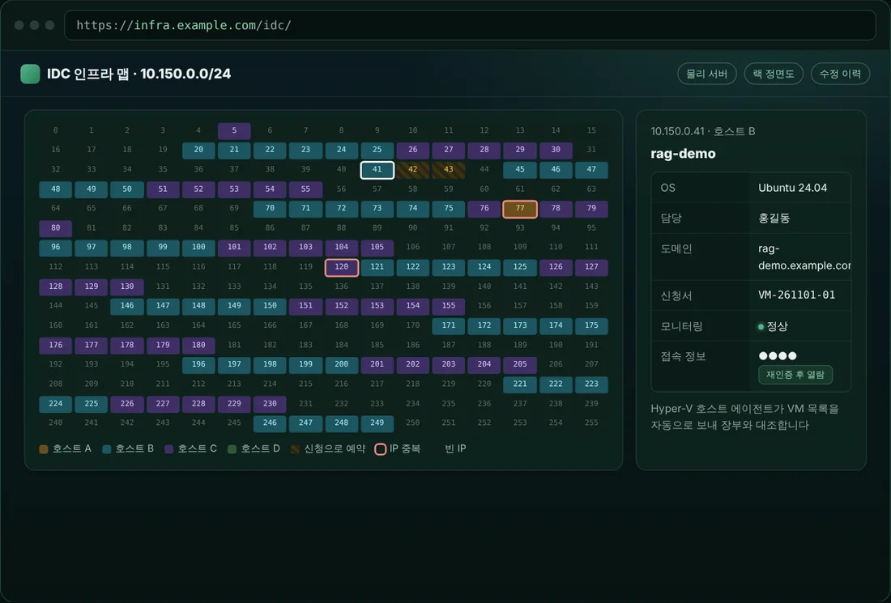

Built Tools 직접 기획·구축해 운영 중인 사내 도구
★ 대표 산출물 · 다이퀘스트
사내 인프라 포털
엑셀, 메신저, 개인 메모에 흩어져 있던 서버·IP·신청 업무를 아무도 시키지 않았지만 하나의 포털로 통합했습니다.
- 1IP 자동 배정 · 직원이 호실만 고르면 장부에서 빈 IP를 찾아 예약하고, 설정 파일(.bat)까지 내려줍니다.
- 2서버 신청 → 장부 자동 반영 · VM 신청과 동시에 IP 예약, 완료하면 IDC 맵·도메인 장부·안내 메일이 자동 처리됩니다.
- 3네트워크 레이아웃 관리 · 사무실 배치도(자리·랙·공유기)와 IDC 랙·VM IP 대역을 한 화면에서 봅니다.
- 4보안과 기록 · LDAP 그룹 권한, 로그인 잠금, 관리자 작업 로그. SSL VPN 개인 계정 중앙화 진행 중.
39대물리 서버
103개VM IP
205개사무실 IP
162개도메인

▶ 화면 따라가기AI 바이브 코딩네 가지 모두 AI를 활용해 직접 기획하고 구현했습니다. 사내 전용 서비스라 외부에서는 접속할 수 없어, 화면은 캡처 또는 예시 데이터로 보여드립니다.
Skills 운영 경험 기반 기술 영역
서버 · 가상화
구축, 표준화, 장애 대응
Linux (Rocky / Ubuntu)
Windows Server
Hyper-V
Proxmox
VM 템플릿 표준화
LVM 디스크 확장
Docker
네트워크 · 보안
경계 보안과 엔드포인트 통제
UTM / VPN
Sophos Firewall
AhnLab 방화벽
firewalld
Nginx 포트맵 · 리버스 프록시
DLP
NAC
EDR
계정 · 권한
최소 권한 원칙 기반 운영
LDAP 계정 · 그룹
Microsoft 365 Admin
GenAI Enterprise 거버넌스
GitLab 권한 관리
sudo 권한 정책
스토리지 · 협업
데이터 중앙화와 백업
Nextcloud
NAS 중앙화
NetBackup
문서중앙화
SaaS 그룹웨어
Nexus (Docker · Maven)
모니터링 · 자산
보이는 인프라가 관리되는 인프라
Zabbix
랙 실장도 관리
IP 대역 관리
자산 전주기 관리
로그 분석
도메인 · 자동화
반복 작업은 스크립트로
DNS 레코드 관리
Let's Encrypt SSL
Bash
PowerShell
Batch
AI 바이브 코딩
PHP · SQLite 사내 도구
테두리 강조 2026년 신규 확장 영역